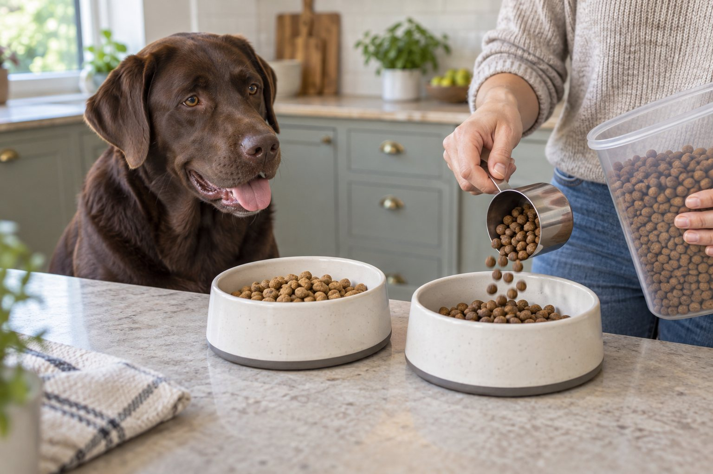
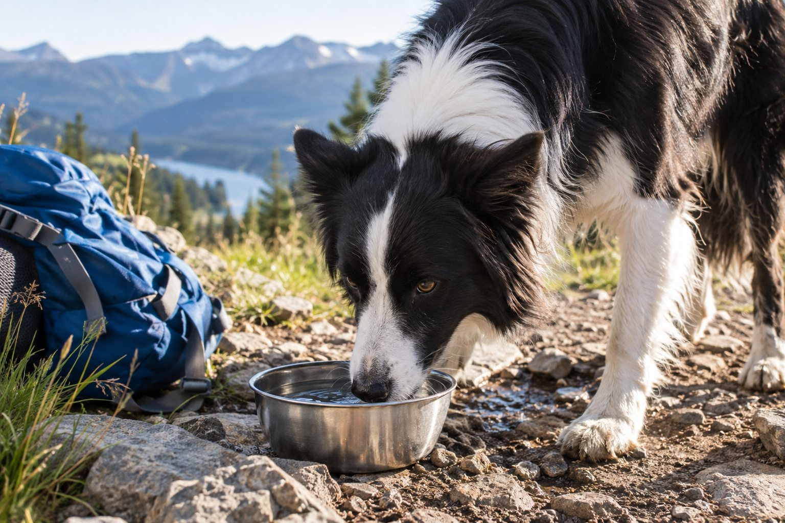
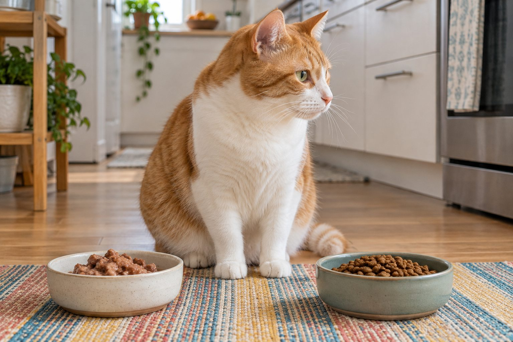

Food & Nutrition
How Often Should You Feed an Adult Dog?
A consistent feeding routine and measured portions matter more than a perfect clock.
Explore the guides
Straightforward guidance on safe treats, feeding habits, and everyday hydration.
A consistent feeding routine and measured portions matter more than a perfect clock.

A measured transition gives you a clearer view of how your dog handles a new food.

Water needs change with size, food, weather, and activity. Learn what a meaningful change looks like.

Start with nutritional adequacy and life stage before marketing claims.

Compare moisture, convenience, storage, and your cat's individual needs without assuming one format fits all.

Plain cooked chicken can be an occasional treat for cats when served safely and in small pieces.

Banana can be an occasional treat for many dogs, but portions and preparation matter.